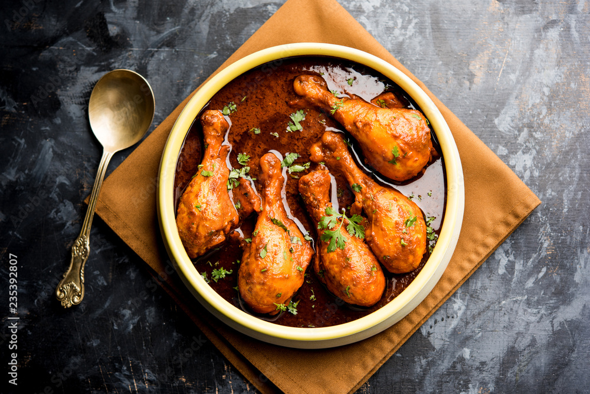

Chicken Curry!

Description
Chicken curry is a flavorful dish made by simmering chicken pieces in a rich, spiced sauce. The sauce typically includes ingredients like onions, garlic, ginger, tomatoes, and a blend of spices such as cumin, coriander, turmeric, and garam masala. The result is a hearty, aromatic meal that can be enjoyed with rice or flatbreads like naan. Variations exist across different cuisines, each adding its unique twist to this beloved comfort food.
Ingredients
- Chicken: 1.5 to 2 pounds, cut into pieces
- Onion: 1 large, finely chopped/li>
- Garlic: 4-5 cloves, minced
- Ginger: 1-inch piece, minced
- Tomatoes: 2 medium, chopped
- Oil: 2-3 tablespoons
Steps
- Prepare the Ingredients: Chop the onions, garlic, ginger, and tomatoes. Cut the chicken into pieces if not pre-cut
- Heat the Oil: In a large pot or pan, heat 2-3 tablespoons of oil over medium heat
- Sauté Onions: Add the chopped onions and sauté until they are golden brown
- Add Garlic and Ginger: Stir in the minced garlic and ginger, cooking for another 1-2 minutes until fragrant
- Cook Tomatoes: Add the chopped tomatoes and cook until they break down and the mixture becomes saucy (about 5-7 minutes)
- Add Chicken Add the chicken pieces to the pot. Stir to coat the chicken with the spice mixture
- Simmer Add salt to taste and enough water (or chicken broth) to cover the chicken. Bring to a boil, then reduce heat to low. Cover and simmer for about 25-30 minutes, or until the chicken is cooked through and tender
- Serve Serve hot with rice, naan, or your favorite bread